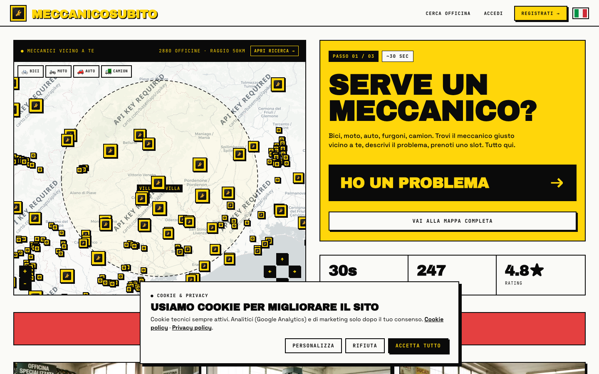
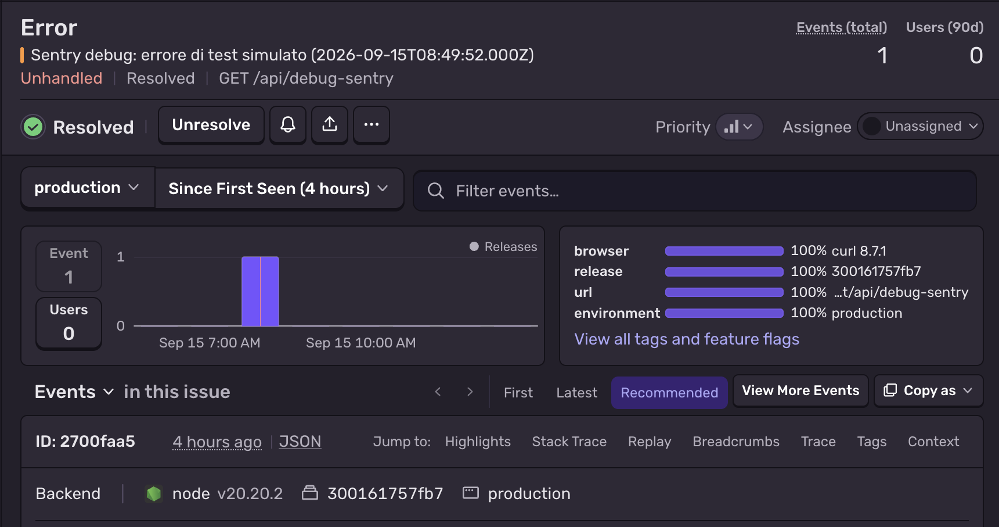
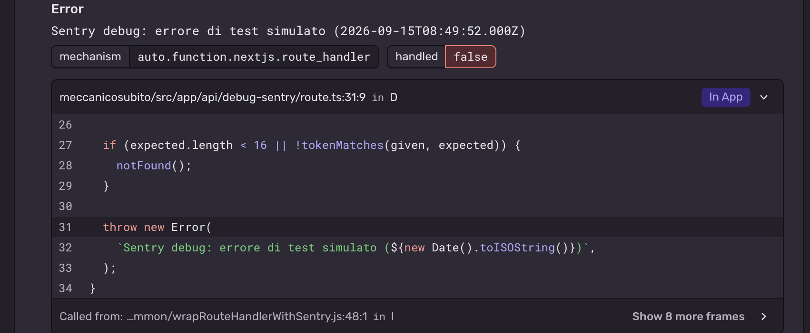

Riccardo Brunello · Master · 24-09-2026
Dall'ambiente locale alla produzione: container, pipeline CI/CD, gestione dei secrets e monitoraggio di un'app reale.
DOCKER · GITHUB ACTIONS · NGINX · SUPABASE · SENTRY
Link della consegna
App pubblica
Health check
https://meccanicosubito.it/api/health
Repository pubblica dell’esame
Apri meccanicosubito-devops-esame
Ultima CI verde storica · 02/06/2026
Run CD storica · 30/05/2026
README e prove
README-DEVOPS.md
evidenze/ · workflows-storici/
Solo materiali d’esame e prove esportate. Il codice dell’app e le run Actions originali restano nella repository privata.
MeccanicoSubito mette in contatto chi ha bisogno di un meccanico con l'officina giusta vicina: il cliente cerca sulla mappa, invia le foto del problema e prenota; l'officina gestisce calendario, preventivi, chat e incassi.
Stack: Next.js 15 + TypeScript · Supabase (Postgres con RLS, Auth, Storage, 134 migration) · Stripe Connect · Docker dietro Nginx su VPS.
Cosa rende delicato il deploy: le variabili NEXT_PUBLIC_* finiscono nel bundle al build, codice e schema del database devono arrivare in ordine e ci sono pagamenti reali, quindi servono rollback e modalità manutenzione.
Il codice è già su GitHub: trigger nativi su push e PR, Secrets mascherati nei log, GHCR come registry con token effimero, integrazione Supabase per le migration e minuti gratuiti sufficienti.
Evoluzione reale: GitHub Pages (solo statico, superato) → CI/CD Actions verso il VPS (09/05–02/06) → deploy scriptato dal Mac con gli stessi step.
Development
localhost:3000 · .env.local
dati mock oppure Supabase locale in Docker con migration e seed · pre-commit Husky: typecheck + lint
Staging (logico)
nessun server dedicato
prima del deploy: prove su Supabase locale · immagine Docker linux/amd64 · npm run deploy:dry (preflight e migration, senza build)
Production
meccanicosubito.it · VPS + Supabase Cloud
.env.production solo sul server · smoke test e rollback automatico a :previous
Scelta: una fase di validazione locale. I test con bypass della manutenzione avvengono invece sul sito già pubblicato.
Sviluppo → staging logico locale → pubblicazione e smoke test.
Il container è l'unità base del ciclo: la stessa immagine gira in locale e in produzione.
deps → npm ci in cache · builder → NEXT_PUBLIC_* come build-arg e output standalone · runner → solo i file necessari, utente non-root. Il runtime include solo l’output necessario; .dockerignore esclude i file .env dai layer.
Servizio web con secrets da env_file (mai dentro l'immagine), porta esposta solo su 127.0.0.1 dietro Nginx, healthcheck su /api/health ogni 30 s, restart automatico e log con rotazione.
Supabase avviato dalla Supabase CLI come stack di container (Postgres, Auth, REST, Storage, Studio) allineato alla versione cloud, con migration e seed. In produzione il back end è managed, quindi il compose di produzione contiene solo web.
Perché: immagine ridotta e runtime riproducibile; configurazione, dati e servizi esterni restano diversi tra gli ambienti.
# back end + front end in locale npm run db:start npm run db:reset npm run dev # container di produzione in locale docker compose up -d --build docker compose ps curl localhost:3000/api/health
{"status": "ok",
"commit": "…",
"builtAt": "…"}
docker compose logs -f web
Comandi documentati nel README-DEVOPS.
.env.local sul Mac, .env.production solo sul VPS, .env.backup con chmod 400: tutti esclusi da .gitignore e .dockerignore. Nel repository originale sono versionati solo i file .example con i nomi delle variabili.
Verificato sulla history: nessun file .env reale è mai stato committato, in nessun branch.
Pipeline storica: 7 GitHub Secrets e 4 Variables nell’inventario del 14/09. I secrets runtime (service_role Supabase e chiavi Stripe) restano sul server. Oggi il token source map Sentry è solo sul Mac e arriva a Docker come build secret.
Log della pipeline: 1.742 righe analizzate, 31 valori mascherati con ***, 0 chiavi in chiaro. Anche su Sentry il token della route di test arriva come [Filtered].
Lezione: il secret VPS_USER=deploy fa mascherare ogni parola «deploy» nei log. I secrets devono essere valori ad alta entropia; lo username va in una Variable.
$ git log --all --diff-filter=A \
-- .env .env.local .env.production
(nessun output)
$ git ls-files | grep env
.env.backup.example
.env.local.example
.env.production.example
# log GitHub Actions · valori mascherati NEXT_PUBLIC_SUPABASE_PUBLISHABLE_KEY=*** host: *** key: *** # run fallita 26833635113 dial tcp ***:22: i/o timeout
Verifiche reali su repository e log della pipeline.
Il lint è uno step esplicito: se fallisce, il job diventa rosso ed è visibile su Actions, sul commit e sulla PR. Esempi reali: run 25784837319 (step Typecheck) e 25610054412 (step Build).
Totale: 101 run verdi · 5 fallite. Prima barriera in locale: pre-commit Husky con typecheck + lint.
Esiti esportati da GitHub · verifica 23/09/2026
Run 26833635111 · 02/06/2026
Commit bca78e1 · durata job 2 min 29 s
| Install dependencies | success |
| Typecheck | success |
| Lint | success |
| Build (standalone, target Docker) | success |
Fonte: run GitHub Actions e file
evidenze/08-ci-storica-verificata.json
Pipeline del periodo maggio–giugno 2026; oggi rimossa da main.
Runtime Node completo per middleware, route API e webhook Stripe; controllo diretto su TLS, header di sicurezza, rate-limit e modalità manutenzione; costo fisso e dati in UE. GitHub Pages è stato provato ed escluso perché serve solo file statici.
github.com/TurboR93/meccanicosubito/actions/runs/26680816310 · 30/05/2026 · 3m11s · build ✔ · deploy ✔
Onestà: dal 02/06 lo stesso flusso gira con npm run deploy dal Mac, perché i runner GitHub non raggiungevano più l'SSH del VPS (i/o timeout). Verifica del 23/09: in produzione c’è il commit 756d161, build del 22/09/2026. Nella run storica schema e smoke test erano skipped: il dettaglio è conservato nelle evidenze.

screenshot/sito-live-home.pngHealth verificato il 23/09 · HTTP 200 · status: ok
commit: 756d161 · build: 22/09/2026 14:11 UTC
https://meccanicosubito.it · HTTP 200 · /api/health → status ok
Monitor già attivo · riscontro nei log del 22/09
218 richieste · tutte HTTP 200
HEAD /api/health
User-agent UptimeRobot
Intervallo osservato: circa 5 minuti
Fonte: docs/sentry-observability.md §6,
commit 6b577b7. Verifica operativa del 22/09,
riportata nella consegna del 23/09.
Da verificare in dashboard: destinatario e ritardo degli alert.
Controlla dall’esterno la disponibilità HTTP dell’app. Le richieste HEAD osservate non verificano il contenuto JSON.
Limite: /api/health non controlla Supabase e Stripe. Lo screenshot della dashboard resta una prova integrativa da acquisire.

screenshot/sentry-02-evento-production.pngTest del 15/09: evento MECCANICOSUBITO-2, environment production, release 300161757fb7, coincidente con /api/health al momento del test.
Server, edge e browser con stack trace leggibili. Gli errori gestiti con solo console.error non vengono inviati; la ricezione degli alert va verificata a parte.
# route di test protetta da token $ curl …/api/debug-sentry → 404 $ curl …/api/debug-sentry?token=sbagliato → 404 $ curl …/api/debug-sentry?token=$TOKEN → 500

screenshot/sentry-03-stack-trace.pngL'errore arriva su Sentry con lo stack trace (route.ts:31) e il token come [Filtered].
| DOWN · timeout | VPS o Nginx irraggiungibili → SSH al VPS, console Hostinger, DNS Cloudflare |
| DOWN · 502 | Nginx attivo ma container fermo → docker compose ps e logs; se il deploy è recente, rollback a :previous |
| DOWN · 503 | modalità manutenzione accesa → npm run maintenance status, poi off |
| Health 200, operazione KO | il controllo è superficiale → verificare log applicativi e dipendenze Supabase/Stripe |
| Sentry · nuovo issue dopo un deploy | regressione del rilascio → se blocca login, prenotazioni o pagamenti, rollback |
| Sentry · picco di un issue noto | problema esterno (Supabase, Stripe) o traffico anomalo → status page e log Nginx |
| Sentry · issue isolato | caso limite di un utente → backlog |
Regola: prima si mitiga (rollback o manutenzione), poi si indaga.
Un ciclo DevOps reale su un'app in produzione, verificato sui dati: repository, 250+ run di pipeline e sito live.
Scelte e limiti da discutere
Deploy attuale dal Mac: comando avviato dallo sviluppatore, poi build, trasferimento, swap, smoke test e rollback scriptati.
Smoke test saltato perché un job precedente era skipped → if: always() && needs.deploy.result == 'success'
CI e CD in parallelo → un workflow unico con deploy: needs: validate, così il deploy parte solo con la CI verde.
Staging logico: prove locali e dry run precedono la pubblicazione. OAuth Google ed email reali richiedono controlli nell’ambiente pubblico.